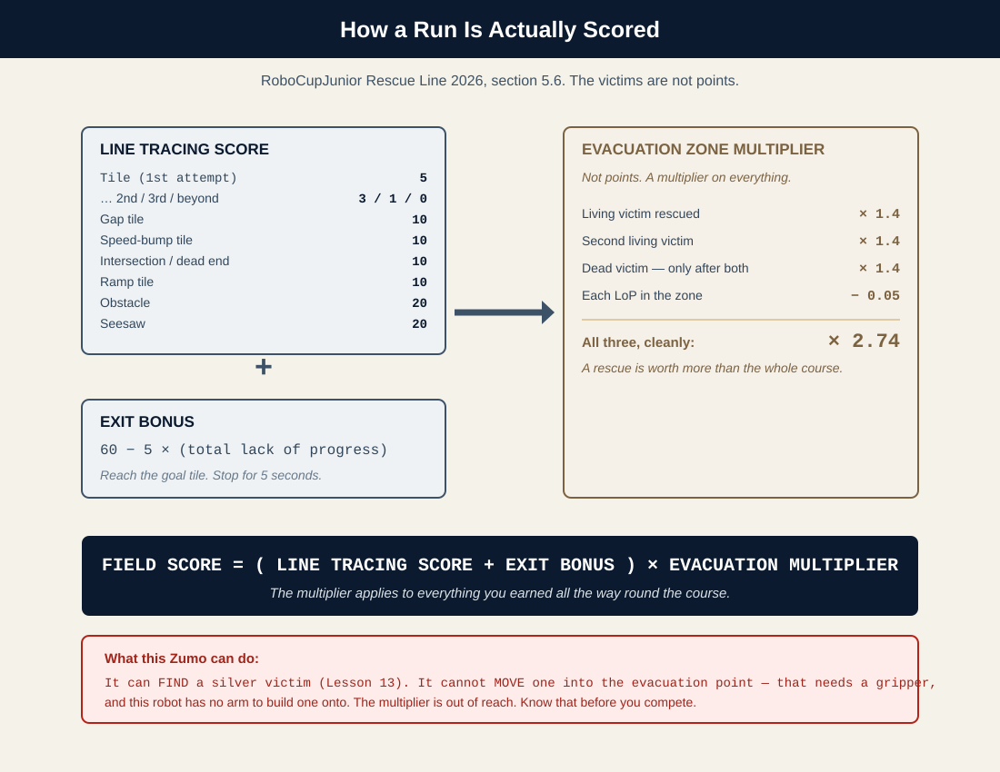
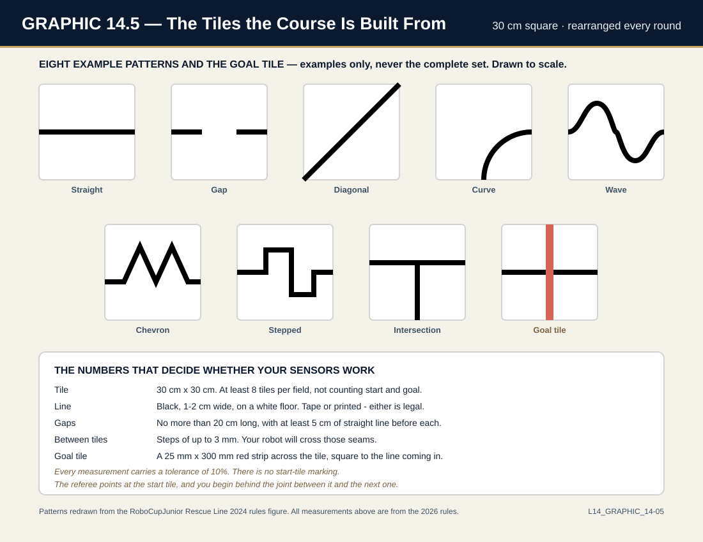
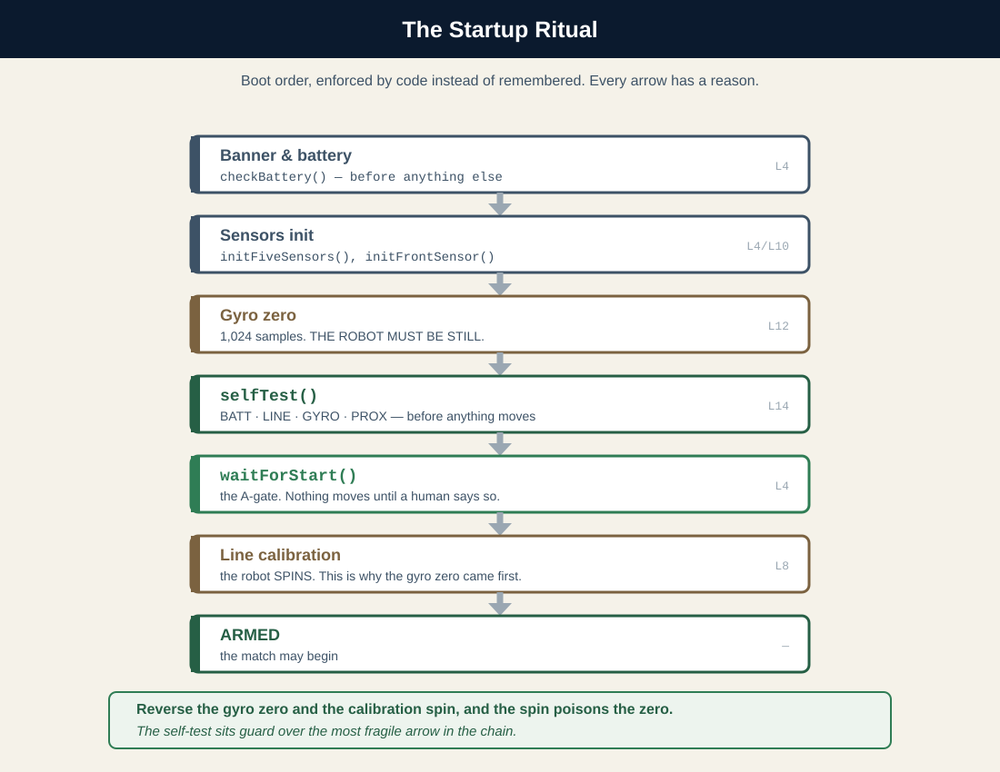
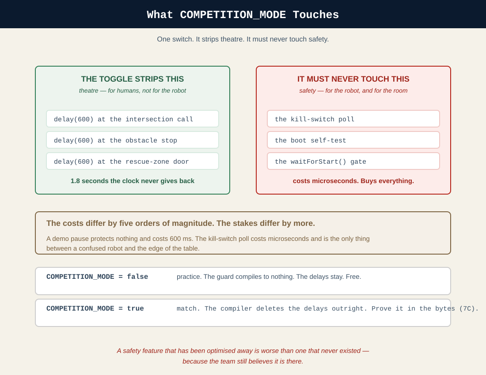

Trust Is Earned at Boot — Reliability as an Engineering Skill
Zumo 32U4 Robotics • PlatformIO Edition
Version 02.36 — August 2026
PART 1 — Theory & Concepts
Sections 1–3: Learn the fundamentals
Section 1The Robot That Has To Work THIS Time
You've done it. You've built the complete robot this course set out to build.
Think about where you started: a box of parts, zero coding experience, and probably some nervous excitement about what you'd gotten yourself into. Now look at what you have:
A robot that follows lines using P-control
Intelligent intersection handling with green marker detection
Obstacle avoidance that navigates around anything in its path
Gap crossing that drives confidently over broken lines
Rescue zone navigation that finds a silver victim in an unmapped room
An honest map of what it cannot do — it cannot see a cliff, and it cannot see a black victim. You proved both, with numbers, in Lessons 11 and 13. The table edge is handled by a barrier, not by code.
That's real robotics doing real work — the same fundamental capabilities used by robots in actual search and rescue operations. You should be proud of what you've accomplished.
Official RoboCupJunior rule. One word deserves precision here, because a referee will be precise about it. In Rescue Line, finding a victim is not rescuing one: §5.6.6 awards a successful victim rescue only when the victim is entirely moved into its designated evacuation point with no part of the robot still touching it. Victims are 4–5 cm spheres and the evacuation points are walled triangles in the corners of the zone (§3.9, §3.10). RoboLore course adaptation. Your robot locates victims. It has no gripper, so it transports none of them — and that is deliberate: locating is a sensing problem this fleet can solve, and transporting is a mechanical problem it has no hardware for. Say it that way in your TDP. Judges reward a team that knows exactly where its robot stops.
But here's the thing: having a capable robot and winning a competition are two different things.
👀 The Reality Check
At every RoboCup Junior competition, there are teams with robots that could complete the course perfectly... but don't. Why? Because "it worked at home" doesn't mean it'll work under competition pressure, on an unfamiliar field, with different lighting, after sitting in a hot car for two hours.
This lesson isn't about teaching you new features. Your robot already has everything it needs. Instead, this lesson is about:
Making your robot RELIABLE — Not "works sometimes" but "works every time"
Tuning for different conditions — Because competition fields are never quite like your practice field
Developing a competition STRATEGY — Knowing when to push and when to play safe
Preparing YOU mentally — Because you're half of the team
Consider this lesson your coach's pre-game talk. Everything after this is about WINNING.
[IMAGE 14.1] Photo of robots competing at a RoboCup Junior event — the energy, the pressure, the excitement
THE ONE IDEA
Competition is reliability engineering. A robot earns trust the same way a pilot’s aircraft does — it is inspected before every flight, by a checklist, in code. This lesson’s program is the robot checking itself before it wrecks itself.
☐ Systematically tune your robot's thresholds for different environments
☐ Test your robot's reliability using the "10x Rule"
☐ Identify and fix intermittent failures before competition day
☐ Develop a competition strategy that maximizes your score
☐ Make smart decisions about Lack of Progress (LoP) situations
☐ Prepare your robot physically for inspection and competition
☐ Manage competition-day stress and stay focused
☐ Create and use pre-match and post-match routines
NOTE
Notice that half of these objectives are about YOU, not your robot. That's intentional. The best robot in the world won't win if its operator panics, makes last-minute changes that break things, or forgets to charge the battery. Competition success is about the complete package.
And on the code side, three pieces that turn discipline into software: a selfTest() that inspects battery, line sensors, gyro zero, and prox before anything moves; a startup ritual that enforces the boot order this book has taught since Lesson 12; and a COMPETITION_MODE toggle that strips the demo theater out of a match run — provably, in the byte counts.
Your robot has five main behaviors: line following, intersection handling, obstacle avoidance, gap crossing, and rescue zone navigation. Let's say each behavior works 90% of the time. That sounds pretty good, right?
But a full competition course might require each behavior multiple times. If you need to execute 10 different behaviors successfully to complete the course, your overall success rate is:
[GRAPHIC 14.1] Reliability does not add. It multiplies.
That's only 35% success! A robot that works "90% of the time" will only complete a full course about 1 in 3 attempts.
WARNING
The Reliability Trap
"It worked most of the time" is NOT good enough for competition. If you want 90% overall success with 10 behaviors, each behavior needs to work about 99% of the time. That's the difference between "it usually works" and "it always works."
KEY TERM: Reliability
In engineering, reliability measures how consistently a system performs its intended function. A reliability of 99% means the system works correctly 99 times out of 100 attempts under the same conditions.
3.2 Understanding Competition Scoring
RoboCup Junior Rescue Line scoring is designed to reward progress, not just completion. Understanding how points are awarded will shape your strategy.
Hazard
Points
Notes
Tile — 1st attempt
5
And only the first. See the decay below.
Tile — 2nd / 3rd / beyond
3 / 1 / 0
Every Lack of Progress devalues the tiles you re-drive.
Tile with one or more gaps
10
Lesson 11.
Tile with one or more speed bumps
10
≤ 1 cm high. Drive it.
Intersection or dead end
10
Lesson 9. A dead end is two green markers.
Ramp
10
Up to 25°, and the 10 is per ramp tile — §3.7.4 awards the points for each individual inclined tile rather than for the ramp as a whole, so a three-tile ramp is worth 30. Earlier editions carried a sentence pricing a whole ramp at 10; the 2026 edition deleted it.
Obstacle
20
Lesson 10. Go around; they may be bolted down.
Seesaw
20
Pivots at the center. Nothing else on the tile.
The exit bonus is not 20 points. It is 60 — and it bleeds.
EXIT BONUS = 60 − 5 × (total lack of progress)
Reach the goal tile and stop dead for five seconds. Those five seconds come out of your eight minutes. Every LoP anywhere on the course takes five points off this, and it floors at zero.
And the victims are not points at all. They are multipliers.
Successful victim rescue
Effect
Condition
Living victim (silver, conductive)
× 1.4
there are exactly two
The dead victim (black)
× 1.4
only after both living victims are already out
Each LoP inside the evacuation area
− 0.05
earned multipliers never fall below 1.25
FIELD SCORE = ( LINE TRACING SCORE + EXIT BONUS ) × EVACUATION ZONE MULTIPLIER

[GRAPHIC 14.3] The whole scoreboard. Notice where the multiplication sign is.
Read that formula again, because it overturns the obvious strategy.
Rescuing victims does not add to your score. It multiplies it. Three clean rescues is 1.4 × 1.4 × 1.4 ≈ × 2.74 applied to every point you earned all the way round the course. A team that plays it safe and skips the evacuation zone keeps its line score and forfeits the biggest number on the field. They cannot win, however clean their line following is.
And now the honest part. A rescue means the victim is entirely inside the evacuation triangle with no part of the robot touching it. Your Zumo can find a silver victim (Lesson 13). It cannot move one — that needs a gripper, and both DRV8838 motor drivers are spoken for, one per tread (Lesson 13, Section 8A.3). The multiplier is out of reach for this robot. Know that walking in. It is not a reason to skip the zone — entering it still costs you nothing, the black-victim limitation is real engineering you can defend to a judge, and everything else on this list is yours to take.
KEY TERM: Lack of Progress (LoP)
When your robot gets stuck, goes off course, or otherwise can't continue, you can call "Lack of Progress." The robot is placed at the last checkpoint, and you continue. However, each LoP costs you points for the skipped section. Strategic teams sometimes call LoP intentionally to skip a difficult section and preserve time.
3.3 Environmental Variables
Your robot was tuned in one environment — your classroom, your practice field, your lighting. Competition will be different. Here's what changes:
Lighting
Different venues have different lighting. Fluorescent lights, natural light from windows, stage lighting for spectators — all of these affect your line sensors and proximity sensors.
Bright overhead lights → Can increase all sensor readings
Natural light from windows → Can create shadows and uneven readings
Side lighting from stage lights → Can affect proximity sensor reliability
Field Surface
The competition field tiles might be:
More or less glossy than your practice surface
Slightly warped or uneven at tile joints
A slightly different shade of white

[GRAPHIC 14.5] Eight examples and the goal tile. The organizers rearrange them for every round — and they are never limited to these eight.
Temperature
Your robot might have traveled in a cold car, then entered a warm gymnasium. Temperature affects:
Battery voltage (cold = lower voltage = slower motors)
Sensor behavior (slight changes in sensitivity)
Motor friction (cold lubricant = stiffer movement)
TIP
The 15-Minute Habit (RoboLore team policy)
This is our rule, not RoboCupJunior's — the rulebook says nothing about acclimation. When you arrive at competition, give your robot at least 15 minutes to reach room temperature before you make any calibration decisions. Cold robots behave differently than warm robots. The rule that does bind you is the clock: §5.3.1 gives you eight minutes for the whole game, calibration included, so the acclimating happens in the pit and not on the field.
3.4 The Psychology of Competition
Let's talk about something most robotics lessons skip: YOUR mental state affects your robot's performance.
Competition creates pressure. Pressure makes people do things like:
Making "one quick fix" right before a match (that breaks everything)
Forgetting to do basic checks (battery, button press, starting position)
Panicking when something unexpected happens
Comparing yourself to other teams instead of focusing on YOUR robot
🎯 The Champion's Mindset
Top competitors understand: you can only control what you can control.
You CAN'T control: the field conditions, other teams' performance, judging decisions
You CAN control: your preparation, your focus, your routine, your response to problems
Focus 100% on what you can control. Everything else is noise.
Before your robot can compete, it must pass inspection. Here's what judges check:
Every rule below names its edition, not just its number, and that is not pedantry — rule numbers move. In the 2025 rules §4.1 was Terms and Definitions; the 2026 edition deleted that section, so §4.1 is now Control and the whole of Section 4 shifted back by one. A citation with no edition on it cannot be checked, and a rule number you cannot check is a rumour. Quote the edition when you write your own paperwork.
📋 Inspection Checklist
Handle: The robot must be equipped with a handle, used to pick it up during the scoring run. (§4.2.7, RCJ Rescue Line 2026)
Start button: A single physical binary switch or button, clearly visible to the referee, used to start the run and to recover from a Lack of Progress. At most one more switch, for cutting power. (§4.2.8, RCJ Rescue Line 2026)
The LoP procedure: You must tell the referee, before each scoring run, exactly what you will do to the robot after a Lack of Progress. Only that procedure is allowed. (§4.2.8, RCJ Rescue Line 2026 — one rule covers the button and the procedure, which is why one citation serves both)
Fully autonomous: No remote control. No external sensors. No information passed to the robot. (§4.1, RCJ Rescue Line 2026)
No pre-mapped dead reckoning. Hard-coding a route from knowledge of the field is prohibited and any pre-mapping disqualifies the robot for the round. (§4.1.3 and §5.2.5, RCJ Rescue Line 2026) Note carefully what this does not ban: dead reckoning itself is legal, and this book is built on it. Lesson 13's sweep is legal precisely because it discovers the room instead of assuming it.
Safety: No sharp edges, exposed wires, or loose screws
Battery: Securely mounted, no exposed contacts
WARNING
The Handle Requirement
This catches teams by surprise! Your robot MUST have a handle that judges can use to lift it safely. The Zumo's built-in grip area usually works, but verify it's obvious and secure. Some teams add a small loop of tape or cord.
4.2 Physical Reliability Checks
Mechanical problems are the #1 cause of competition failures. Check these BEFORE competition day:
DO THIS NOW: Physical Inspection
Give your robot a thorough physical exam:
Wheels: Spin freely? No debris in treads? Securely attached?
Sensors: Line sensors close to but not touching surface? Proximity sensors unobstructed?
Screws: All screws tight? Nothing rattling?
Wires: Nothing loose? No wires that could catch on obstacles?
Battery: Secure connection? No corrosion on contacts?
Blade/bumper: If you have a plow attachment, is it secure?
4.3 Battery Management
Battery voltage directly affects your robot's behavior:
Full charge: Motors spin faster, sensors may read differently
Half charge: Your "normal" tuned behavior
Low charge: Sluggish motors, potential brownouts
🏆 Competition Battery Strategy
Bring at least 2 sets of fully charged batteries
Tune your robot at "realistic" battery level (not fresh off the charger)
Check battery level before EVERY match
Have a designated "competition set" that you only use for actual matches
To check battery voltage, you do not write anything at all — you already own three instruments that do it:
YOU ALREADY OWN THIS TOOL — THREE TIMES OVER
Battery visibility has shipped with every project since Lesson 4: hold A + B at any stop and checkBattery() puts the millivolts on the screen. The boot banner reports voltage with a GOOD / LOW / CHARGE! verdict. And as of this lesson, selfTest() judges the battery before every run, automatically. Three instruments, zero new code — and all three read the real readBatteryMillivolts(), not a hand-rolled voltage divider.
👀 Healthy Battery Readings
~5,400 mV: Fresh off the charger. Four eneloop NiMH cells.
4,800 mV — the plateau: Where NiMH spends most of its working life. This is BATTERY_GOOD — the level you should be tuning at, and the level you want to walk to the start line with.
4,200 mV — the floor:BATTERY_LOW, and this is the number selfTest() judges you against — battOK = (mv >= BATTERY_LOW). Below it, BATT prints FAIL. Swap the pack. Not after this run — now.
Below 4,200 mV: Sluggish motors, and eventually a brownout mid-match.
Why these numbers and not round ones. Your fleet runs eneloop NiMH, not alkalines. NiMH holds a flat plateau for most of its discharge and then falls off a cliff — which is why a pack can read "fine" and die four minutes later. The two constants in RobotConfig.h are not guesses; they are the chemistry. Do not "round them off".
4.4 What to Bring
📦 Competition Day Kit
Your robot (obviously!)
Laptop with PlatformIO installed
USB cable for programming
At least 2 sets of fresh AA batteries
Battery charger (if using rechargeable)
Small screwdriver set (Phillips and flathead)
Electrical tape
Spare jumper wires
Notebook and pen for recording observations
Snacks and water (for YOU)
Your tuning documentation (threshold values, etc.)
Section 5 · Code WalkthroughWhy the Limits Are Not Blanks
Everything in Sections 3 and 4 was process for humans. This section turns the same discipline into software. Three pieces, and by now you can predict where each one lives:
Piece
Lives in
Job
COMPETITION_MODE + self-test limits
RobotConfig.h
One switch, three engineering limits
selfTest()
RobotHelpers.cpp
The pit check, in code
The startup ritual
main.cpp setup()
Boot order, enforced — not remembered
Look at where selfTest() lands: RobotHelpers.cpp, next to waitForStart() and checkBattery() — the two helpers that have shipped with every project since Lesson 4. That is not filing convenience; it is a graduation. checkBattery() answers when you ask. waitForStart() gates motion. selfTest() is their capstone: it answers before you risk anything, about every subsystem at once, whether you remembered to ask or not. Ten lessons of safety habits, promoted into one function.
5.1 Why the Limits Are Not Blanks
Lessons 8 through 13 filled RobotConfig.h with blanks — numbers you measure on your robot because they are different on every robot. The three self-test limits are a different species: they are engineering limits, and they ship with values because they come with reasons, not measurements. Read the comments on each one in Step 1 — the reason is stated where the number lives, so the day someone wants to change one, they must argue with the reason first. That is what Section 8.2’s threshold discipline looks like when it grows up.

[GRAPHIC 14.2] The boot order, enforced by code instead of remembered.
5.2 One Switch, Two Jobs
COMPETITION_MODE’s first job is theater: the delay(600) demo pauses — the beats where the robot stops to let a human read OBSTACLE! or RESCUE ZONE off the screen. Beautiful in a classroom demo; in a match, each one is six tenths of a second the clock never gives back. The toggle skips them, and it changes no behavior doing it.
Its second job was forced on you by a rule. Line calibration spins the robot, and §5.3.6 does not permit a robot to move on its own while calibrating — so in match mode the spin comes out and your hand sweeps instead. That is a behavior change, the only one the switch makes, and the difference is worth stating plainly: the first job removes something that protects nothing, and the second changes who moves the robot without changing what the robot learns. Section 7C proves both in the most unforgiving currency there is: the compiled bytes.

[GRAPHIC 14.4] One switch. It strips theatre. It must never touch safety.
What the toggle must never touch is safety. The kill switch polls in match mode exactly as it does in practice. Hold that line in your mind until you reach Bonus Mystery B4, where someone crosses it.
Start from your finished Lesson 13 project (Maker: Lesson 13 → Finished, 25,248 bytes). Four steps; every one compiles green; every byte count is printed so you can check your build against the book’s.
Step 1 — One Switch, Three Limits
THE GOAL
The competition toggle and the self-test limits land in RobotConfig.h. Read every comment — the limits ship with reasons, and the reasons are the point.
Add the whole block at the bottom of RobotConfig.h:
// ===== COMPETITION MODE (NEW for Lesson 14) =====// false = practice: the OLED narrates, demo pauses run, like always.// true = match day: the narration pauses are skipped. Every one of// those delay(600)s is six tenths of a second the clock does not// give back. The BEHAVIOR does not change - only the theater does.constbool COMPETITION_MODE = false;
// ===== SELF-TEST LIMITS (NEW for Lesson 14) =====// These are ENGINEERING limits, not tuning blanks - they come with// reasons, not measurements. Change them only with a better reason.// After a GOOD calibration, a still gyro drifts under a degree in// half a second. After a SPUN calibration it drifts by dozens.// Three degrees splits those worlds with room to spare.constint SELFTEST_GYRO_MAX_DEG = 3;
// A live line sensor over pale floor reads in the hundreds. A dead// or unplugged channel rides up at its timeout ceiling. Anything// pinned near the ceiling is a sensor that is not answering.constint SELFTEST_LINE_MAX = 1800;
// How long the prox wave-test waits for your hand before failing.constunsignedlong SELFTEST_PROX_WAIT = 8000; // milliseconds
🔩 COMPILE CHECK
25,248 bytes — byte-identical to Lesson 13 finished. Constants nothing reads are free; you have known that since Lesson 13 Step 1.
selfTest() joins waitForStart() and checkBattery() in RobotHelpers.cpp — the family it graduates from. Four checks, one report card, no motion. Defined, declared, not yet called.
RobotHelpers.cpp needs one include it never needed before — the limits live in the config:
#include <Zumo32U4.h>
#include "RobotConfig.h" // NEW for Lesson 14: selfTest() reads the limits
#include "RobotSensors.h"
#include "RobotHelpers.h"
Declare it in RobotHelpers.h, under its elders:
/*
selfTest() NEW for Lesson 14
-----------
The pit check, in code. Battery, line sensors, gyro zero, and a
prox wave-test - PASS or FAIL for each, on the screen, before the
robot is allowed anywhere near a start line. Returns true only if
every check passed. A failed test can be overridden with A - the
robot may not refuse the match, but it must never lie to you.
*/
bool selfTest();
And the function itself, at the bottom of RobotHelpers.cpp. It is long, and every line of it is a Lesson 3 through 13 habit made permanent — read the four check blocks like the checklist they are:
/*
selfTest() NEW for Lesson 14
-----------
checkBattery() answers when you ASK. This answers BEFORE YOU RISK
ANYTHING - the same discipline as a pilot's walk-around. Four checks,
one report card, no motion.
*/
bool selfTest() {
bool allPass = true;
display.setLayout21x8();
display.clear();
display.gotoXY(0, 0);
display.print(F("== SELF-TEST =="));
// ----- 1. BATTERY - enough charge to finish a match? -----int mv = readBatteryMillivolts();
bool battOK = (mv >= BATTERY_LOW);
display.gotoXY(0, 2);
display.print(F("BATT "));
display.print(mv);
display.print(battOK ? F(" PASS") : F(" FAIL"));
if (!battOK) allPass = false;
// ----- 2. LINE SENSORS - is every channel answering? -----// A dead channel rides at its timeout ceiling. Raw read, no// calibration needed - alive is alive on any surface.unsignedint raw[5];
lineSensors.read(raw);
bool lineOK = true;
for (int i = 0; i < 5; i++) {
if (raw[i] == 0 || raw[i] >= SELFTEST_LINE_MAX) {
lineOK = false;
}
}
display.gotoXY(0, 3);
display.print(F("LINE "));
display.print(lineOK ? F("PASS") : F("FAIL"));
if (!lineOK) allPass = false;
// ----- 3. GYRO ZERO - was the calibration honest? -----// Half a second of stillness. A good zero drifts under a degree.// A zero learned during motion drifts by dozens - THIS is the// check that catches a spun calibration automatically.
gyroReset();
unsignedlong gyroStart = millis();
while (millis() - gyroStart < 500) {
gyroUpdate();
}
int drift = getTurnAngle();
bool gyroOK = (abs(drift) <= SELFTEST_GYRO_MAX_DEG);
display.gotoXY(0, 4);
display.print(F("GYRO "));
display.print(drift);
display.print(gyroOK ? F(" PASS") : F(" FAIL"));
if (!gyroOK) allPass = false;
// ----- 4. PROX - can the lookout still see? -----// The only check that needs YOU: wave a hand at the front.
display.gotoXY(0, 5);
display.print(F("PROX wave hand..."));
bool proxOK = false;
unsignedlong proxStart = millis();
while (millis() - proxStart < SELFTEST_PROX_WAIT) {
if (readFrontProx() >= DETECTION_THRESHOLD) {
proxOK = true;
break;
}
}
display.gotoXY(0, 5);
display.print(F("PROX "));
display.print(proxOK ? F("PASS ") : F("FAIL "));
if (!proxOK) allPass = false;
// ----- THE VERDICT -----
display.gotoXY(0, 7);
if (allPass) {
display.print(F("ALL PASS"));
ledGreen(1);
buzzer.playNote(NOTE_C(6), 200, 15);
delay(1200);
ledGreen(0);
} else {
display.print(F("FAILED - A=override"));
ledRed(1);
buzzer.playNote(NOTE_A(3), 500, 15);
// The robot may not refuse the match - but the override is a// DECISION, made by a human, with the failure on the screen.
buttonA.waitForButton();
ledRed(0);
}
display.clear();
return allPass;
}
Three details worth a second read. The gyro check is the automatic version of Lesson 12’s hardest-won rule: a zero learned during motion drifts by dozens of degrees in half a second, so half a second of watching catches a spun calibration every boot, without anyone remembering to look. The prox check is interactive — it needs your hand, because a sensor test that never sees a target tests nothing. And the override: a failed test does not brick the robot; it demands a human decision, made with the failure on the screen. The robot may not refuse the match — but it must never lie to you.
🔩 COMPILE CHECK
25,248 bytes — byte-identical, and the function is NOT in the build. We checked with avr-nm: zero selfTest symbols. The uncalled function was dropped entirely, exactly as in Lesson 13 Steps 2 and 4 — 87 lines of code, zero bytes of flash, until something calls it. Never trust a byte count without knowing why it moved — or why it didn’t.
Then the call. Position is the entire lesson: aftergyroSetup(), because the gyro check needs a zero to check — and before anything moves, because a robot that fails inspection does not get to spin, drive, or race:
display.print(F("HOLD STILL"));
gyroSetup();
// ===== SELF-TEST (NEW for Lesson 14) =====// AFTER gyroSetup() - the gyro check needs a zero to check.// BEFORE anything moves - a robot that fails inspection does not// get to spin, drive, or race. The pit check comes first.
selfTest();
Walk the full boot order once, out loud, because it is now enforced by code instead of memory: banner and battery → sensors init → gyro zero, robot still → self-test → A-gate → line calibration → armed. Every arrow has a reason, and the self-test now sits guard over the most fragile one: nothing spins until the gyro’s zero is learned and verified.
🔩 COMPILE CHECK
26,002 bytes — up 754.selfTest() finally has a caller, so the linker finally pays for it: Step 2’s whole function, plus its strings, arriving at once. That is what the report card costs. A dead battery discovered mid-match costs the match.
The three demo pauses learn to read the switch. This is the finished build.
Three delay(600) lines in main.cpp exist purely so a human can read the screen — at the intersection call, at the obstacle stop, and at the rescue-zone door. Each one gets the same one-word guard:
if (!COMPETITION_MODE) delay(600); // demo pause - free in practice, 0.6s in a match
All three sites, same edit. Note what is not guarded: the countdown, the celebrations at a completed rescue, and above all the kill-switch poll.
Then one more guard, in RobotSensors.cpp, and this one is not theater — it is a rule. Official RoboCupJunior rule. §5.3.6: teams may calibrate their robot in as many locations as desired on the field, but the clock will continue to run. Robots are not permitted to move on their own while calibrating. Your calibration spins the robot. On a practice floor that is fine, and it is what you built in Lesson 8. On a competition field it is illegal, so on match day your hand does the sweeping — exactly the way you first calibrated in Lesson 4:
void calibrateLineSensors() {
for (int i = 0; i < 100; i++) {
if (COMPETITION_MODE) {
delay(50); // your hand does the sweeping
} elseif (i < 50) {
motors.setSpeeds(-100, 100); // Spin left
} else {
motors.setSpeeds(100, -100); // Spin right
}
lineSensors.calibrate();
}
motors.setSpeeds(0, 0);
}
The algorithm did not change. One hundred samples, same call, same rescaling — the only thing that changed is what moves the sensors across the tape. And the window is not arbitrary: a hundred passes, 50 ms apiece, is the CAL_TIME_MS sweep window you swept by hand in Lesson 4, unchanged. The trailing setSpeeds(0, 0) is deliberately left unguarded — commanding a stop is not moving, and a robot that reaches calibration with its wheels already turning should be stopped by something.
The toggle strips theater. It does not touch safety — and the one behavior it does change, it changes because a rule says so, which Section 7C will make you prove in bytes.
🔩 COMPILE CHECK
26,002 bytes — unchanged, and this is the finished build. With the switch at false the compiler folds if (!false) into nothing and keeps the delay — the guard is literally free in practice mode. Where did the toggle go? Flip it and see: Section 7C.
📦 Catch Up with Project Maker — Step 4 (the finished build)
Five rungs. Four of them run the same finished build — because this lesson’s claims are about reliability, and reliability is proven by runs, not by code variants. Only 7C is a different build, and its difference is one boolean.
7A — The Healthy Pass
Charged battery, clean sensors, robot still during boot. Run the ritual end to end and watch the report card: BATT PASS · LINE PASS · GYRO 0 PASS · PROX PASS — wave your hand when it asks. Green light, one clean note, and the boot continues. Boring. Write down the gyro drift number it showed you. Boring, verified, and written down is exactly what competition-ready looks like.
A test you have never seen fail is a test you have no reason to trust — the book’s oldest discipline, now applied to the tester itself. Break each check physically, one at a time, and watch it fail honestly:
GYRO: spin the robot gently in your hands during the “HOLD STILL” calibration. The self-test should print a drift far past 3 and fail — you have just watched it catch Lesson 12’s worst bug automatically.
PROX: when it asks for your wave, sit on your hands. Eight seconds, then FAIL.
LINE: boot with the robot held in the air, sensors pointing at the ceiling far away — channels ride to their ceiling, FAIL.
BATT: if you have a tired pack, boot on it. (Do not run a match on it afterward — that is the point.)
Each failure should name itself on the screen and demand the A-override. Four honest failures witnessed is what makes 7A’s ALL PASS worth anything at all.
One edit in RobotConfig.h (Maker: Lesson 14 → 7C Match Mode):
constbool COMPETITION_MODE = true;
Compile and read the number: 25,946 bytes — 56 fewer than the practice build. The 56 decomposes, and the two halves differ in kind. 36 are the three demo pauses, physically absent from the match binary; the compiler saw if (!true) and deleted the delays entirely. The other 20 are the two setSpeeds calls inside the calibration loop, deleted the same way — bytes you did not save by being clever, but by obeying §5.3.6. Now run the full course in both modes, side by side. Same line following, same turns, same rescue; the match run is simply quieter and about two seconds faster, and you sweep the robot by hand instead of watching it spin. Flip it back to false until match day.
Section 3.1’s reliability math, executed. Boot → self-test → calibrate → full course, ten consecutive runs, with a tally: clean runs, LoPs, failures — and what the self-test said before each. Ten for ten is competition-ready. Nine for ten means Section 8.4’s intermittent-failure hunt starts now, a week early, with data — which is the entire reason this rung exists.
Match day compresses everything. Set a timer for the interval your competition allows between matches — five minutes is typical — and run the whole pit cycle against it: battery swap, boot, self-test, calibration, robot staged at the start line, hands off. Then do it again with a planted surprise: have a teammate secretly cover one line sensor with a finger of tape. The clock is running, the self-test says LINE FAIL, and now you learn what your team’s five minutes are actually worth. Practice the failure, not just the success. That is Section 8’s morning routine, rehearsed until it is boring — and Section 3.4 already told you: boring under pressure is the champion’s mindset.
Here's the most important testing principle you'll learn:
KEY TERM: The 10x Rule
Every behavior your robot performs must work successfully at least 10 times in a row before you consider it "reliable." If it fails even once in 10 attempts, it's not ready for competition.
This sounds extreme, but remember the reliability math from Section 3. If you need 90%+ success on a full course, each individual behavior needs to be essentially perfect.
DO THIS NOW: 10x Testing Protocol
Test each behavior 10 times in a row. Record your results:
Behavior
Attempts
Successes
Notes
Line following (straight)
10
Line following (curves)
10
Intersection (no green)
10
Intersection (left turn)
10
Intersection (right turn)
10
Gap crossing
10
Obstacle avoidance
10
Rescue zone entry
10
Victim detection
10
Rescue zone exit
10
8.2 Systematic Threshold Tuning
Use this process for each threshold value:
Observe: Put the raw sensor values on the OLED — that is exactly what Lesson 13's 7A Surface Meter does
Record: Write down values under different conditions
Calculate: Set threshold between the ranges you want to distinguish
Test: Apply 10x Rule to verify
Document: Write down your final value and the conditions
Tuning Helpers You Already Have
YOU ALREADY OWN THIS TOOL
The live sensor display this tuning pass needs is Lesson 13’s 7A Surface Meter (Maker: Lesson 13 → 7A) — raw values and prox count on the OLED, motors parked. And the live Kp buttons have shipped in the STOPPED state since Lesson 8: A lowers, C raises, the screen shows the value. Competition prep is not writing new tools; it is knowing which ones you already trust.
TIP
Tune on BOTH Surfaces
Place your robot on the competition surface (or similar) AND on a different surface. Your thresholds need to work on both. If they only work perfectly on one surface, they're too tight.
8.3 Environmental Variation Testing
Don't just test in perfect conditions. Intentionally create challenging scenarios:
🔬 Stress Test Checklist
Test with bright lights directly above
Test with lights dimmed
Test with sunlight from a window
Test with low battery (around 4.2V)
Test immediately after charging (high voltage)
Test on slightly dusty/dirty surface
Test on glossy vs. matte surface
Test with your hand casting shadow near robot
If your robot fails any of these tests, your thresholds may be too tight. Consider making them more conservative.
8.4 Identifying Intermittent Failures
The hardest bugs to fix are the ones that only happen "sometimes." Here's how to track them down:
🔍 Intermittent Failure Investigation
Document: Write down EXACTLY what happened — which behavior, what the robot did, what was nearby
Replicate: Try to make it happen again. Same position? Same speed? Same battery level?
Isolate: Test just that behavior separately, not as part of full course
Monitor: Put the sensor values on the OLED during the failure, or stream them over Serial
Threshold check: Is a sensor value hovering right at a threshold boundary?
Most intermittent failures are caused by:
Threshold boundaries: Sensor reading is sometimes above, sometimes below threshold
Timing issues: Robot moves faster/slower than expected
Environmental variation: Different lighting in different parts of course
8.5 When the Self-Test Itself Complains
Report card says
Look at
BATT FAIL
Swap the pack. Not “after this run” — now. Section 4.3 is the law here.
LINE FAIL
A channel at its ceiling: dust on a window, a loose jumper, or the robot booted in mid-air. Clean, reseat, boot on the floor.
GYRO FAIL (big drift)
Something moved the robot during “HOLD STILL.” Usually a hand, a bumped table, or an eager teammate. Reboot; nobody touches it this time.
PROX FAIL
Did anyone actually wave? If yes: check for tape or grime over the front emitters and receiver.
Everything passes in the pit, robot fails on the field
The self-test checks the robot, not the field. Lighting, surface, and layout live in Sections 3.3 and 8.3 — stress-test against the venue, not the classroom.
Official RoboCupJunior rule. There is exactly one code freeze the rules impose, and it is very late: §5.3.7 — once a scoring run has begun, no more calibration is permitted, including changing code or code selection. Until the moment the referee starts your run, the rulebook lets you edit anything you like.
RoboLore team policy. That is precisely why we stop much earlier. The rules say when you must stop; discipline says when you should. Establish a code freeze deadline:
🚫 The #1 Competition Killer
"Let me just make one small change before the match..."
This phrase has destroyed more competition runs than any other factor. Last-minute code changes are almost NEVER "small" and frequently break things that were working.
🏆 Code Freeze Protocol
2 days before competition: Feature freeze — no new code, only bug fixes
Night before competition: Code freeze — no changes AT ALL
Competition day: Only change threshold VALUES, never logic
Between matches: Resist the urge to "fix" things
8A.2 Never Trade Safety for Milliseconds
COMPETITION_MODE buys time by cutting theater. The moment someone proposes cutting a safety check for the same reason — “the kill-switch poll costs time in the loop” — the answer is no, and it is worth knowing exactly why. The demo pauses cost 600 milliseconds each and protect nothing. The kill-switch poll costs microseconds and is the only thing standing between a confused robot and the edge of the table, a spectator’s ankle, or its own gearbox grinding against a wall. The costs differ by five orders of magnitude; the stakes differ by more. Lesson 11 put it in stone for features; competition puts it in stone for optimizations: a safety feature that has been “optimized away” is worse than one that never existed, because the team still believes it is there. Bonus Mystery B4 is this exact sin, committed in one line, and the cruelest part is that every practice run will hide it. Trace why before you peek.
8A.3 Why the Limits Have Reasons Attached
Every threshold in this book so far was a blank: measured on your robot, meaningless on mine. The self-test limits ship with values, and the difference is worth naming. SELFTEST_GYRO_MAX_DEG = 3 is not a measurement — it is an argument: good calibrations drift under a degree, spun ones by dozens, and three splits the worlds with margin. When a number carries its reasoning in the comment beside it, changing the number requires beating the reasoning — and that is precisely what stops the slow rot Bonus Mystery B2 demonstrates, where a limit gets loosened one “it kept failing” at a time until it stops anyone from failing, ever, at anything.
Not all points are created equal. Some are easy to get, others are risky.
Task Type
Difficulty
Strategy
Straight line sections
Easy
Should be 100% reliable — never fail these
Gentle curves
Easy
Should be 100% reliable
Sharp turns
Medium
May need speed adjustment
Intersections
Medium
Calibration-dependent
Small gaps
Medium
Usually reliable if tuned
Large gaps
Hard
Consider skipping if unreliable
Obstacle avoidance
Medium
Depends on obstacle placement
Rescue zone
Hard
High reward, but takes time
NOTE
Strategic Thinking — and the trap in it
The tempting arithmetic goes: "rescue is only worth 50 points and it costs me 60 seconds — skip it, drive more tiles." That arithmetic is from the wrong rulebook. Rescue is a multiplier, not a total (Section 3.2). Skipping the zone does not cost you 50 points; it costs you a factor on everything else you scored.
For your Zumo, the calculus is different again, and you should be clear-eyed about it: this robot cannot complete a rescue at all — no gripper. So the zone is not a scoring decision for you; it is a time decision. Entering, sweeping, finding the victim, and exiting is a defensible run. Getting stuck in there and burning three minutes is not.
Time Management
The eight minutes is not eight minutes of driving.
Rules §5.3: each team has a maximum of 8 minutes for a game, and the game includes the time for calibration and the scoring run. The clock starts before the robot does.
So the boot banner, the self-test, the wave for the proximity check, the gyro hold-still, and the line calibration all come out of the same eight minutes. So does the five-second stop on the goal tile that the exit bonus requires. Time your whole pit-to-goal cycle in Section 7E, not just the driving.
👀 A realistic eight-minute budget
0:00–1:00 — place the robot, boot, self-test, wave for the prox check
1:00–1:30 — line-sensor calibration on the actual venue floor, swept by hand (§5.3.6)
1:30–7:30 — the scoring run. Six minutes, not eight.
7:30–7:35 — the five-second stop on the goal tile, for the exit bonus
You may skip calibration entirely and start the run immediately (§5.3.8). On a venue floor you have never driven, that is usually a bad trade — but it is a trade, and it is yours to make.
Time management decisions:
If rescue zone entry is taking too long, consider calling LoP and skipping
Know how much time each section typically takes for YOUR robot
Have a "2-minute warning" plan — what do you do if time is running low?
Lack of Progress Decisions
LoP isn't a failure — it's a strategic tool.
When to Call LoP
Call Lack of Progress when:
Robot is clearly stuck and won't recover
Robot has gone significantly off course
A section is taking much longer than expected
Time is running low and you need to skip ahead
🚫 LoP Mistakes to Avoid
Waiting too long: Every second stuck is a second wasted
Calling too early: Maybe robot would have recovered
Not knowing checkpoint locations: Know where you'll restart
Emotional decisions: Don't call LoP because you're frustrated
Know the Field
Before your match, study the competition field:
DO THIS: Pre-Match Field Analysis
Walk around the field and observe:
Where are the intersections? Any unusual configurations?
Where are the gaps? How big are they?
Where are obstacles placed?
Where is the rescue zone? What's the approach angle?
Are there any tight curves or unusual line patterns?
Is any part of the field in shadow or bright light?
The Code Challenges
Three upgrades to the competition build. Worked solutions behind each reveal, and every one is a compiled, verified build in the Maker under Lesson 14 → CHALLENGES.
Challenge 1: The Wheel TestMediumModerate
📁 Work in: your LastName_L14 build — add a fifth check inside selfTest().
🎯 THE GOAL
The self-test checks four subsystems and skips the wheels. Add a fifth check that PASSes only when the pit crew can spin each tread by hand and both encoders report real motion. A wheel that will not count is invisible to the odometer — and Lessons 11 and 13 both ride on that odometer.
🧠 THE LOGIC (Pseudocode)
prompt the crew: "spin both wheels"
save each wheel's starting count
until BOTH wheels have moved (or 10 seconds pass):
if the left count changed a lot -> leftOK
if the right count changed a lot -> rightOK
pass only if leftOK AND rightOK
(one wheel passing must never carry the other)
🧩 THE TEMPLATE
Two independent flags are the whole point — fill the three blanks.
display.gotoXY(0, 6);
display.print(F("ENC spin wheels..."));
long startL = encoders.getCountsLeft();
long startR = encoders.getCountsRight();
bool leftOK = false, rightOK = false;
unsignedlong encStart = millis();
while (millis() - encStart < 10000 && !(leftOK && rightOK)) {
if (abs(encoders.getCountsLeft() - startL) > 100) leftOK = ____;
if (abs(encoders.getCountsRight() - startR) > 100) rightOK = ____;
}
bool encOK = leftOK ____ rightOK; // both, not either
display.gotoXY(0, 6);
display.print(F("ENC "));
display.print(encOK ? F("PASS ") : F("FAIL "));
if (!encOK) allPass = false;
🔓 Click to reveal solution
Inserted just before the verdict block in selfTest():
// ----- 5. ENCODERS - CHALLENGE 1: do both wheels count? -----// Spin each tread by hand. A wheel that will not count is a wheel// the odometer cannot see - find out in the pit, not mid-match.
display.gotoXY(0, 6);
display.print(F("ENC spin wheels..."));
long startL = encoders.getCountsLeft();
long startR = encoders.getCountsRight();
bool leftOK = false, rightOK = false;
unsignedlong encStart = millis();
while (millis() - encStart < 10000 && !(leftOK && rightOK)) {
if (abs(encoders.getCountsLeft() - startL) > 100) leftOK = true;
if (abs(encoders.getCountsRight() - startR) > 100) rightOK = true;
}
bool encOK = leftOK && rightOK;
display.gotoXY(0, 6);
display.print(F("ENC "));
display.print(encOK ? F("PASS ") : F("FAIL "));
if (!encOK) allPass = false;
Note the ten-second window and the two independent flags — one wheel passing must never carry the other. Both-encoder discipline, from Lesson 11, now applied to the tester.
📁 Work in: your LastName_L14 build — rewrite the self-test's failure branch.
The A-override exists because match day is messy. Some teams want the opposite rule: a robot that fails inspection does not run, full stop — fix the robot, not the rules. Remove the override so a failed self-test parks the robot until power-cycle. Think first: what should the loop wait for? (Trick question.)
🔓 Click to reveal solution
The failure branch, rewritten:
display.print(F("FAILED - NO OVERRIDE"));
ledRed(1);
buzzer.playNote(NOTE_A(3), 500, 15);
// CHALLENGE 2: strict mode. Fix the robot, not the rules.// The while(true) is deliberate: there is nothing to wait FOR.while (true) {
// parked. Power-cycle after the repair.
}
The while (true) is the answer to the trick question: there is nothing to wait for. No button makes a dead battery charged. The robot parks, red light on, failure on the screen, until a human fixes the cause and power-cycles — which is exactly the policy the challenge asked for, stated in three lines of honest code.
📁 Work in: your LastName_L14 build — add a counter, then a check at the top of FOLLOWING_LINE.
Builds on:
the report pattern from Lesson 10 — count it, show it, and let the tally tell you which failure to fix first.
🎯 THE GOAL
Section 9's Lack-of-Progress guidance taught the decision; now instrument it. Make C, pressed mid-run, stop the robot, add one to a running LoP count, show it, and return to STOPPED — keeping the total all match. A team that knows its LoP rate knows which failure to fix first.
🧠 THE LOGIC (Pseudocode)
declare a counter that lives for the whole run: lopCount = 0
at the TOP of FOLLOWING_LINE, right after the kill switch:
if C was pressed (debounced):
stop the motors
add one to lopCount
show "LoP #<count>" and beep
return to STOPPED
break out of this loop pass
keep the count on screen — it must survive to the next press
🧩 THE TEMPLATE
A run-long counter, plus a one-shot check at the top of the state. Fill the four blanks.
int lopCount = 0; // lives for the whole run// top of FOLLOWING_LINE, right after the kill switch:if (buttonC.____) {
motors.setSpeeds(0, 0);
lopCount____; // count this one
display.setLayout21x8();
display.clear();
display.gotoXY(0, 2);
display.print(F("LoP #"));
display.print(lopCount);
buzzer.playNote(NOTE_A(4), 300, 15);
delay(800);
currentState = ____; // back to the start state
showStatus();
____; // leave this loop pass
}
🔓 Click to reveal solution
One counter with the other bookkeeping:
int lopCount = 0; // CHALLENGE 3: Lack-of-Progress restarts this run
And the check, at the very top of FOLLOWING_LINE, right after the kill switch:
// CHALLENGE 3: C = Lack of Progress. Stop, count it, reset to// the start state - and KEEP the count on the screen. A team// that knows its LoP rate knows which failure to fix first.if (buttonC.getSingleDebouncedPress()) {
motors.setSpeeds(0, 0);
lopCount++;
display.setLayout21x8();
display.clear();
display.gotoXY(0, 2);
display.print(F("LoP #"));
display.print(lopCount);
buzzer.playNote(NOTE_A(4), 300, 15);
delay(800);
currentState = STOPPED;
showStatus();
break;
}
If practice area available, do a few short tests — NOT full course
10.2 Pre-Match Routine (10 minutes before)
📋 Pre-Match Checklist
Fresh/verified batteries installed
Robot powered on and responsive
Code is correct version (check COMPETITION_MODE)
No last-minute code changes!
Robot starting position understood
Field observed — any changes from practice?
Deep breath — you've prepared for this
TIP
The Power of Routine
Having a consistent pre-match routine reduces anxiety and prevents forgotten steps. Do the SAME things in the SAME order every time. Your brain will shift into "competition mode" automatically.
10.3 During the Match
Once your robot starts, your job changes. You're now an observer and strategic decision-maker.
🎯 During-Match Mindset
Stay calm: Your robot can't sense your anxiety, but you make better decisions when calm
Watch, don't react: Let your robot attempt recovery before intervening
Track time: Know roughly how much time is left
Think ahead: If robot is struggling, what's your LoP plan?
Don't touch: You can't help your robot physically during a run
10.4 Between Matches
WARNING
The Between-Match Danger Zone
This is when bad decisions happen. You just had a disappointing run, you're frustrated, and you want to "fix" things. RESIST THIS URGE.
Between-match protocol:
Document: Write down what happened — facts, not emotions
Analyze: Was it a threshold issue? Mechanical? Environmental?
Decide: Is this fixable with a SMALL change, or does it require risky code modification?
If threshold: Small, conservative adjustments only
If code: Probably don't change it — you'll introduce new bugs
If mechanical: Fix it, but test thoroughly
10.5 Post-Competition
Whether you win or lose, the learning doesn't stop:
Write down everything that worked and didn't work
Note environmental factors you didn't anticipate
Record any behavior that surprised you
Identify what you'd do differently next time
Celebrate what went well — you built a rescue robot!
10.6 Common Pitfalls
TIP
Common Pitfalls — Competition Day
False start: Robot moves before the judge signals. Always wait for button press + countdown — never auto-start in setup()!
Debug code left in:Serial.print() statements slow down your loop and can cause timing issues. Use a COMPETITION_MODE flag to disable them.
No backup plan: Robot fails in round 1 and you panic. Have a simplified "safe" version of your code ready that completes the course slowly but reliably.
"It worked at home!": Different lighting, surface, temperature. Always give time to test on the actual competition field.
Over-tuning between rounds: You change one thing, it breaks two others. Stick to threshold adjustments only.
Dead batteries: Always check voltage before EVERY match. Bring spares!
Reflection Questions
What is the Reliability Equation, and why does "90% reliable" result in only ~35% course completion?
What is the 10x Rule, and why is it important for competition preparation?
Name three environmental factors that can affect robot performance at competition.
When should you call Lack of Progress? When should you NOT call it?
What's the danger of making code changes between matches?
Describe your pre-match routine in order.
The Final Word
You've come an incredible distance. From zero coding experience to building a fully autonomous rescue robot — that's no small accomplishment.
Remember:
Your robot is capable. Trust it.
Preparation beats panic. Follow your routines.
Every team has failures. How you respond matters.
You can only control what you can control. Focus there.
Win or lose, you've already accomplished something remarkable.
🏆 Go Get 'Em!
You've built the robot. You've done the preparation. You've learned the strategies.
Now it's time to compete.
Good luck — not that you'll need it. You're ready.
What's Next?
In Lesson 15: Advanced PID Control, you’ll add the D that stops the wiggle and the I that kills the standing error.
Two lessons remain, and the competition build you hardened here is the platform both of them stand on.
Lesson 15 (The Present Isn’t Enough): the D that stops the wiggle and the I that kills the standing error — full PID on a line follower you already trust.
Lesson 16 (Nothing Left to Take Away): the capstone. You benchmark this robot against itself, buy an enhancement with bytes you have to go find, and finish the TDP.
Go compete first — you've earned that. Then come back and finish the book.
Beyond these pages: sumo, maze solving, soccer — same robot, new problems.
Next: Lesson 15 is The Present Isn’t Enough — the D that stops the wiggle and the I that kills the standing error. The competition build you hardened here is the platform it tunes.
Write your LoP procedure and your self-test card. RCJ rule §4.2.8 (RCJ Rescue Line 2026) requires the team to notify the referee of its LoP procedure before each scoring run. This entry is not optional at a real competition. Why judges care: they do not have to. The referee asks for this before your first run, and a team improvising it at the table has already lost the room.
🏁 FINISHED EARLY?
Four messed-up files wait in Sabotage — each Maker link opens the finished build with one defect planted: a self-test that cannot fail, a limit loosened until it stopped complaining, a dropped zero that passes every dead battery, and a kill switch switched off for the competition.
Four saboteurs. Three of the four builds are byte-identical to the correct one (26,002), and the fourth is the most instructive number in this book. As always: the planted line is shown up front; your job is to explain why this line produces that symptom. All four builds live in the Maker under Lesson 14 → BONUS.
Mystery B1 — The Test That Cannot Fail
“The tests were slowing us down,” the saboteur explains. The planted line, first thing inside selfTest():
bool selfTest() {
returntrue; // as planted: "the tests were slowing us down"bool allPass = true;
Here is the delicious part: this build compiles at 25,252 bytes — 750 bytes SMALLER than the correct one. Explain the symptom (every boot says nothing at all), and explain the byte count. The second question is the deep one.
Reveal the mechanism
The early return true; makes every line after it unreachable — and the compiler knows. Dead code is deleted; four checks, the report card, the strings, all of it, garbage-collected out of the binary. The 740 missing bytes are the corpse of the entire self-test, and the linker is the only witness who noticed. A test that cannot fail is worse than no test — with no test, at least nobody is being reassured. Lesson 11 cut a feature the hardware could not support rather than ship a guard that mostly works; this is the same law, broken from the other side.
The gyro check “kept failing,” so someone helped. The planted line:
constint SELFTEST_GYRO_MAX_DEG = 90; // as planted: "3 kept failing"
Reveal the mechanism
A spun calibration drifts by dozens of degrees in the test’s half second — and dozens is comfortably under 90, so the exact failure this check exists to catch now sails through with a green PASS. Worse: the check still runs, still prints a number, still looks like vigilance. And notice what the check “kept failing” actually meant: someone kept jostling the robot during calibration. The limit was never the problem; it was the messenger. Loosening a limit because it keeps firing is shooting the smoke detector for beeping. Byte-identical to the correct build — one immediate value, the disassembly class from Lessons 12 and 13.
The subtlest typo in the book. The planted line, in the battery check:
bool battOK = (mv >= 420); // as planted
Reveal the mechanism
420 is not 4200. Every battery this robot will ever meet — charged, tired, or minutes from dying — reads above 420 millivolts, so BATT prints PASS forever, and the one failure mode that quietly ruins more matches than any other (Section 4.3) is now invisible to the very check built for it. The build is byte-identical to the correct one: same instructions, one immediate constant. The floor arc in Lesson 13’s B2 at least showed itself on the floor; a dead-battery PASS shows itself in the third match of the day, at the worst possible moment, as a robot that simply… slows down. Read your constants like they owe you money.
The gravest of the four. “Polling costs time,” says the saboteur, and guards the kill switch with the competition flag:
if (!COMPETITION_MODE && killSwitchPressed()) break; // as planted: "polling costs time"
Predict the practice-mode byte count before you peek. Then predict match day.
Reveal the mechanism
In practice mode, !false && folds to nothing: the build is byte-identical to the correct one, and every practice run behaves perfectly. The bug does not exist until the day the switch flips — and on that day the compiler deletes the kill check entirely (we verified: the match binary is 8 bytes smaller, with one killSwitchPressed call site gone). Every rehearsal green, the one run that counts un-stoppable: that is the signature of guarding safety behind a mode. Section 8A.2 stated the law; this is what breaking it looks like in one line. The kill switch answers to nobody — not the clock, not the mode flag, nobody.
A boot-time inspection of every subsystem — battery, line sensors, gyro zero, prox — with a per-check PASS/FAIL verdict, before anything is allowed to move. The pit check, in code.
Startup ritual
The enforced boot order: banner → init → gyro zero (still) → self-test → A-gate → line calibration (robot spins in practice, your hand sweeps in a match) → armed. Enforced by code, not memory.
Competition mode
A config switch that removes demo theater (the human-readable pauses) from a match build — provably, in the byte count — while changing no behavior and touching no safety code.
Code freeze
The point before competition after which code changes stop — because an untested improvement is a tested robot traded for an untested one. (Section 8A.1.)
Engineering limit
A threshold that ships with a stated reason instead of a per-robot measurement. Changing one means beating the reason, not just editing the number.
Lack of Progress (LoP)
A competition restart taken when the robot stops making progress. Counting your LoPs per run turns bad luck into a failure list ordered by priority.
Reliability
The probability the whole system works, which is every subsystem’s probability multiplied together — the sobering math of Section 3.1, and the reason 95% ten times is not 95%.
Engineering limits — each ships with its reason in the comment
The boot order, verbatim
// ===== GYRO SETUP (NEW for Lesson 12) =====// The robot MUST be still. If it moves now, the gyro will learn// that moving IS still - and it will be wrong for the whole run.
display.clear();
display.gotoXY(0, 0);
display.print(F("Gyro calibrating"));
display.gotoXY(0, 2);
display.print(F("HOLD STILL"));
gyroSetup();
// ===== SELF-TEST (NEW for Lesson 14) =====// AFTER gyroSetup() - the gyro check needs a zero to check.// BEFORE anything moves - a robot that fails inspection does not// get to spin, drive, or race. The pit check comes first.
selfTest();
The guard, verbatim (all three sites)
if (!COMPETITION_MODE) delay(600); // demo pause - free in practice, 0.6s in a match
 THE ONE IDEA
THE ONE IDEA NOTE
NOTE WARNING
WARNING KEY TERM: Reliability
KEY TERM: Reliability TIP
TIP DO THIS NOW: Physical Inspection
DO THIS NOW: Physical Inspection Why these numbers and not round ones. Your fleet runs eneloop NiMH, not alkalines. NiMH holds a flat plateau for most of its discharge and then falls off a cliff — which is why a pack can read "fine" and die four minutes later. The two constants in
Why these numbers and not round ones. Your fleet runs eneloop NiMH, not alkalines. NiMH holds a flat plateau for most of its discharge and then falls off a cliff — which is why a pack can read "fine" and die four minutes later. The two constants in  THE GOAL
THE GOAL ENGINEER’S LOG #14 — feeds: Rules-mandated deliverable
ENGINEER’S LOG #14 — feeds: Rules-mandated deliverable